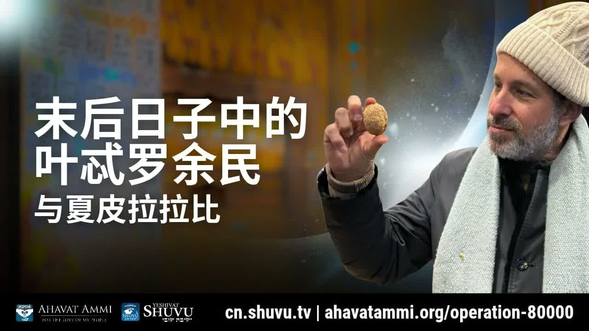

耶特罗的末世蓝图：和解、预备与第三日的复活 Yitro's End-Time Blueprint: Reconciliation, Preparation, and the Third-Day Resurrection
沙皮拉拉比博士打开《出埃及记》十八至二十章，论证「耶特罗篇」(Parashat Yitro, פרשת יתרו) 正是末世的预表蓝图：先有犹太人与外邦人的和解，然后是预备期，最后是「第三日」的复活与外邦人的丰满。 Rabbi Dr. Shapira opens Exodus 18–20 to argue that Parashat Yitro (פרשת יתרו) is itself the end-time blueprint — first the reconciliation of Jew and Gentile, then a preparation period, and finally a “third-day” resurrection tied to the fullness of the Gentiles.
在为期两天的安息日学习中，沙皮拉拉比博士向一群华人门徒提出了一个大胆的论断：「本周我们的妥拉分额耶特罗，就是预表了主基督耶稣再来的光景。」他循着彌迦书 7:15「大出埃及记」的钥匙，把出埃及记十八章读成「和解之章」、十九章读成「预备之章」、二十章读成「立约之章」——并把这个三层结构，对接到何西阿书 6:2 的「两天-第三天」预言上。他的结论尖锐：今日的我们正活在「预备期」之中，圣灵正在「孕育」一群犹太-外邦混合的余民 (Sh'erit, שארית)，他们必须先进入「外邦人的丰满」(Melo HaGoyim, מלאת הגויים)，才能领受第三日复活的祝福。 Over a two-day Shabbat study with a group of Chinese disciples, Rabbi Dr. Shapira lands a bold claim: “This week's Torah portion, Yitro, prefigures the scene of the return of the Lord Christ Jesus.” Following Micah 7:15's “great Exodus” key, he reads Exodus 18 as the Chapter of Reconciliation, Exodus 19 as the Chapter of Preparation, and Exodus 20 as the chapter of the Covenant — and binds this three-stage shape to the “two days – third day” prophecy of Hosea 6:2. His conclusion is sharp: we are now living in the preparation phase, and the Spirit is shaping a Jewish-Gentile remnant (Sh'erit, שארית) that must first enter the fullness of the Gentiles (Melo HaGoyim, מלאת הגויים) before the blessings of the third-day resurrection arrive.
一、彌迦书 7:15 ── 「末世大出埃及」的钥匙I. Micah 7:15 — The Key of the Great End-Time Exodus
拉比从一节常被忽略的经文起步：彌迦书 7:15——「我要把奇事显给他们看，好像出埃及之日一样。」 在拉比传统里，这一节是一把解经钥匙：神在末世要为祂的百姓所做的事，将按出埃及的模板再来一次。这就意味着：出埃及记不是过去的历史档案，而是「末世大出埃及」的预表蓝图。 The rabbi begins from a verse most readers overlook: Micah 7:15 — “As in the days of your coming out from the land of Egypt, I will show him marvelous things.” In the rabbinic tradition, this verse is a hermeneutic key: what God will do for His people at the end will follow the pattern of the Exodus. The book of Exodus is not just historical archive — it is the prophetic template of the Great End-Time Exodus.
「我要今天给你们一个提议：本周我们的妥拉分额耶特罗，就是预表了主基督耶稣再来的光景。」——沙皮拉拉比博士 “I want to propose to you today: this week's Torah portion, Yitro, prefigures the scene of the return of the Lord Christ Jesus.”— Rabbi Dr. Itzhak Shapira
拉比同时承认：他在课堂上将彌迦书的章节口误说成「15:7」——但彌迦书只有七章，正确出处是 7:15。这个细节本身值得我们学习：拉比传统里有 peshat（פשט，字面义）与 drash（דרש，讲道义）之分；我们追随他进入drash层面的解读时，每一个引证都仍要回到经文本身核实。这正是这篇文章后面会反复回到的「分辨」(Birur, בירור) 主题。 The rabbi himself acknowledges his slip — he oral-cited “Micah 15:7,” but Micah has only seven chapters. The correct reference is 7:15. The detail matters: rabbinic tradition distinguishes between peshat (פשט, the plain sense) and drash (דרש, the homiletical sense), and as we follow the rabbi into drash, every citation must still be checked against the text. This will become the discernment thread (Birur, בירור) we return to throughout the article.
二、出埃及记 18–19–20 的三层结构 ── 和解、预备、立约II. The Three-Stage Shape of Exodus 18–19–20 — Reconciliation, Preparation, Covenant
拉比把妥拉分额「耶特罗」（Parashat Yitro, פרשת יתרו；出埃及记 18:1–20:23）解构成三层叠加的预表： Rabbi Shapira parses the Torah portion Parashat Yitro (פרשת יתרו; Exodus 18:1–20:23) into a three-layered prefigurement:
第十八章 ── 和解之章。 摩西的外邦人岳父耶特罗 (Yitro, יתרו) 带着摩西的妻子西坡拉 (Tzipporah, צפורה) 和两个儿子来到旷野与摩西相会。这一章里看似只是家事，但拉比指出：没有这场和解，就没有西乃山。 耶特罗为以色列献祭、与摩西「同食饼」、为摩西出谋设立司法体系——他是第一个在以色列群体里担任治理职分的外邦人。 Chapter 18 — Reconciliation. Moses' Gentile father-in-law Yitro (יתרו) brings his daughter Tzipporah (צפורה) and her two sons out to the wilderness to meet Moses. On the surface, a family matter; but the rabbi insists: without this reconciliation, there is no Sinai. Yitro offers sacrifice for Israel, breaks bread with Moses, and devises the judicial system — he is the first Gentile to hold a governance role inside the camp of Israel.
第十九章 ── 预备之章。 「以色列人离开了埃及地之后的第三个新月，他们进入了西乃的旷野。」（出 19:1）从这一节开始，整章经文都是预备：洁净自己、洗衣、不可亲近女人、为山立界、等候第三日云彩降下。拉比反复点出：「第三个新月」、「第三日」——三这个数字是这一篇解经的引信。 Chapter 19 — Preparation. “In the third new moon after the children of Israel went out of the land of Egypt, they came into the wilderness of Sinai.” (Ex 19:1) From that verse onward, the chapter is one long preparation sequence: consecrate yourselves, wash your clothes, abstain, set bounds around the mountain, wait for the third day when the cloud descends. The rabbi keeps returning to the cadence — third new moon, third day. The number three is the exegetical fuse of the parashah.
第二十章 ── 立约之章。 十诫颁布。在拉比的彌迦书钥匙下，这一章预表了基督的再来——因为当神在末世「显奇事」时，所走的路径与西乃完全相同：先有外邦-犹太的和解，然后是预备，最后才是立约之主的显现。 Chapter 20 — Covenant. The Ten Commandments are given. Under Micah's key, this chapter prefigures the return of Christ — because when God “shows marvelous things” at the end, the path is identical to Sinai: first the Gentile-Jew reconciliation, then the preparation, and only then the appearing of the Lord of the Covenant.
「我们今天要学习的是十八、十九章，就是和解跟预备，然后进入这个约，盟约。」——沙皮拉拉比博士 “What we are studying today are chapters 18 and 19 — reconciliation and preparation — and then entering into this covenant.”— Rabbi Dr. Itzhak Shapira
三、耶特罗与摩西 ── 犹太与外邦的和解必先于立约III. Yitro and Moses — Jew-Gentile Reconciliation Must Precede Covenant
拉比的核心解读是：耶特罗 (外邦人) 与摩西 (犹太人) 的和解，预表了在末世立约之前，犹太人与外邦人必须先彼此和解。这并非政治和解或社交和解，而是圣约性的和解——是双方都承认对方在神的计划里有不可替代的位置。 The rabbi's core reading: the reconciliation of Yitro (the Gentile) with Moses (the Jew) prefigures that, before the end-time covenant, Jew and Gentile must first be reconciled to one another. This is not political reconciliation or social tolerance; it is covenantal reconciliation — both sides confessing the other's irreplaceable place in God's plan.
「就是伊特罗跟摩西的和解的关系预表了犹太人跟外邦人必须要和解才能进入圣约。而在犹太人跟外邦人中间有一个西坡拉，就是摩西的太太，这个就是预表了主基督耶稣。」——沙皮拉拉比博士 “That is, the reconciled relationship between Yitro and Moses prefigures that Jews and Gentiles must be reconciled before they can enter the covenant. And between the Jews and the Gentiles there is Tzipporah — Moses' wife — and this prefigures the Lord Christ Jesus.”— Rabbi Dr. Itzhak Shapira
这是一段需要谨慎处理的drash。在传统犹太注释里，西坡拉并未被普遍读作「弥赛亚的预表」；这是拉比沙皮拉作为「弥赛亚犹太人」(Yehudi Meshichi, יהודי משיחי) 思想线索里所作的类型应用。读者应当看清楚：这一层意义是新约-旧约的双向阅读所产生的，并不是出埃及记字面就这么写的。但拉比的论点有它的力量：西坡拉确实站在犹太丈夫与外邦父亲之间，她让两边能够在同一席上同饼。在保罗的话里 (以弗所 2:14)，弥赛亚正是那位「拆毁中间隔断之墙」、让两边「合而为一」的中保。 This is drash that must be handled with care. In traditional Jewish commentary, Tzipporah is not generally read as a “type of the Messiah” — this is a typological application made within the Yehudi Meshichi (יהודי משיחי, “Messianic Jewish”) reading line that Rabbi Shapira inhabits. Readers should see it clearly: this layer of meaning emerges from a two-way New-Old Testament reading; it is not what Exodus literally says. But the rabbi's claim has weight: Tzipporah does stand between her Jewish husband and her Gentile father, and through her the two sit at one table. In Paul's language (Eph 2:14), the Messiah is precisely the one who “tears down the dividing wall” and makes the two into one.
对一位华人基督徒而言，这一节的应用直接而具体：你与以色列的关系，不应当是远方的同情，而应当是「同坐席」的家人关系。 你的祷告、你的奉献、你的言语、你的政治立场——都在见证：耶特罗已经来了，他与摩西吃饼。 For a Chinese Christian the application is direct: your relationship with Israel must not be distant sympathy — it must be the relationship of family at one table. Your prayers, your gifts, your speech, your political positioning — all of these testify: Yitro has come, and he is breaking bread with Moses.
四、余民 (Sh'erit) ── 一对一对地出埃及IV. The Remnant (Sh'erit) — Coming Out Pair by Pair
在拉比的图像中，出埃及不是单一民族的事件。出埃及记 12:38 已经清楚记载：「又有许多闲杂人 (erev rav, ערב רב)、并有羊群牛群和他们一同上去。」 也就是说，第一次出埃及时已经是「犹太-外邦混合的群体」同时离开。同一个模式将在末世再来一次。 In the rabbi's picture, the Exodus is not a one-nation event. Exodus 12:38 already records: “A mixed multitude (erev rav, ערב רב) also went up with them; and flocks and herds, a great deal of livestock.” From the very first Exodus, it was already a Jewish-Gentile composite community that came out together. The same pattern will be re-run at the end.
「在这些全部发生的中间，有一群人叫做余民，他们也跟着出了埃及。你要明白这里的这群人是犹太人、以色列人的余民，还有外邦人的余民，一对一对地往前进。」——沙皮拉拉比博士 “In the midst of all of this, there is a group called the remnant, and they also came out of Egypt. You need to understand that this group is the Jewish remnant of Israel, and the Gentile remnant — moving forward pair by pair.”— Rabbi Dr. Itzhak Shapira
「一对一对」这个动作非常重要。拉比用的是一个挪亚方舟般的画面——洁净的与不洁净的，犹太的与外邦的，成对进入救赎。这意味着外邦人不是「补丁」，也不是替补——他们是与犹太人并肩站立的余民。「Sh'erit」（שארית，「余民」）在希伯来圣经里是一个反复出现的关键词：以赛亚书、耶利米书、撒迦利亚书、罗马书 9–11 章都在用它。它不是「剩下来的人」的负面意义，而是「神所留下来作种子的人」。 The phrase “pair by pair” matters. The rabbi paints a Noahic image — clean and unclean, Jew and Gentile, entering redemption in pairs. This means Gentiles are not a “patch” or a “substitute” — they are the remnant standing shoulder to shoulder with Israel. The word Sh'erit (שארית, “remnant”) recurs through Isaiah, Jeremiah, Zechariah, and Romans 9–11. It is not a diminished “leftover” but the seed God has reserved.
请注意：这里并没有「教会取代以色列」的影子。相反，拉比的图像是「教会与以色列并肩前进」——这是华人基督徒非常需要听见的一句话，因为「替代神学」(supersessionism) 在华语教会里仍有许多版本。 Note: there is no “Church replaces Israel” shadow here. The rabbi's picture is “Church and Israel walking side by side” — a word Chinese Christians especially need to hear, because supersessionism still has many versions inside Sinophone churches.
五、「第三个新月」与何西阿书 6:2 ── 第三日的复活V. The Third New Moon and Hosea 6:2 — The Third-Day Resurrection
拉比在这里把出埃及记 19:1 的「第三个新月」与何西阿书 6:2 的「第三日」连成一条预言线： Here the rabbi binds the “third new moon” of Exodus 19:1 to the “third day” of Hosea 6:2 — drawing them into one prophetic line:
「过两天他必使我们苏醒，第三天他必使我们兴起，我们就在他面前得以存活。」——何西阿书 6:2 “After two days He will revive us; on the third day He will raise us up, that we may live before Him.”— Hosea 6:2
拉比的解读是：何西阿书的「两天」是预备期，「第三天」是复活与存活。正如耶稣在第三天复活，以色列也正预备复活；正如以色列在第三个新月领受妥拉，末世的余民也要在「第三日」领受复活的能力。 这是一种nesting（套叠式）的预言结构：耶稣的复活作为「头一份初熟果子」(bikkurim, ביכורים；林前 15:20)，已经发生；而以色列与外邦余民的「集体复活」，在末世仍要发生。 The rabbi's reading: Hosea's “two days” are the preparation, and the “third day” is resurrection and life. Just as Jesus was raised on the third day, Israel is preparing to be raised; just as Israel received the Torah in the third new moon, the end-time remnant is to receive resurrection power on the third day. This is a nested prophetic structure: Jesus' resurrection as the “firstfruits” (bikkurim, ביכורים; 1 Cor 15:20) has already happened; the corporate resurrection of Israel and the Gentile remnant remains to happen at the end.
「正如耶稣他也是在第三天复活，以色列在这里也预备要复活。所以余民们必须要做好准备，预备好自己进入这个第三天的复活。」——沙皮拉拉比博士 “Just as Jesus also resurrected on the third day, Israel here is also preparing to resurrect. Therefore the remnant must be ready — preparing themselves to enter into this third-day resurrection.”— Rabbi Dr. Itzhak Shapira
犹太传统对何西阿书 6:2 的解读本身就有「弥赛亚」色彩——巴比伦塔木德 (Sanhedrin 97a) 与《米德拉什·拉巴》都把「两日 / 第三日」与「两千年 / 第三千年」连起来，期待弥赛亚在「第三个千年」彰显。拉比沙皮拉的应用，是把这条古老的预言线连到我们这一代。 Jewish tradition's reading of Hosea 6:2 already carries messianic weight — Bavli Sanhedrin 97a and the Midrash Rabbah connect the “two days / third day” to “two thousand years / third millennium,” awaiting Messiah's manifestation in the “third thousand.” Rabbi Shapira's application binds that ancient prophetic line to our generation.
六、外邦人的丰满 (Melo HaGoyim) ── 进入祝福的先决条件VI. Melo HaGoyim — The Fullness of the Gentiles as Precondition
拉比把何西阿的「两天他已经把我们成为完整了」直接对接到罗马书 11:25 保罗所说的「外邦人的数目添满」——希伯来语作Melo HaGoyim（מלאת הגויים，「外邦人的丰满」）： The rabbi links Hosea's “after two days He has made us complete” directly to Paul's “fullness of the Gentiles” in Romans 11:25 — Hebrew Melo HaGoyim (מלאת הגויים, “the fullness of the nations”):
「他说两天他已经把我们成为完整了。何西阿，这个是两天已经完整了是什么意思？这个就是保罗说的丰满。我们首先必须要进入丰满，我们才能够接受接纳神要给我们的祝福，在第三天。」——沙皮拉拉比博士 “He said, ‘After two days He has made us complete.’ Hosea — what does it mean that ‘two days are complete’? This is what Paul called fullness. We must first enter into fullness before we can receive and accept the blessings God wants to give us, on the third day.”— Rabbi Dr. Itzhak Shapira
保罗在罗马书 11:25 写：「弟兄们，我不愿意你们不知道这奥秘…就是以色列人有几分是硬心的，等到外邦人的数目添满了；于是以色列全家都要得救。」拉比的应用让这节经文在末世场景里有了具体形状：当外邦人——包括华人基督徒——在他们的信仰里达到「丰满」时，那一刻就是以色列国从硬心走向苏醒的临界点。 你的属灵成熟，不只是个人灵命的事——它是触发以色列复兴的钥匙之一。 Romans 11:25 says: “I do not want you to be unaware of this mystery, brothers… a partial hardening has come upon Israel, until the fullness of the Gentiles has come in; and so all Israel will be saved.” The rabbi's application gives that verse a concrete end-time shape: when the Gentiles — including Chinese Christians — reach “fullness” in their faith, that moment is the threshold at which Israel begins to wake from her hardening. Your spiritual maturity is not a private matter — it is one of the keys that triggers Israel's revival.
这彻底翻转了许多基督徒习惯的次序。我们通常以为：「以色列得救之后，世界就会得救。」但拉比指出（且保罗在罗马书 11 章实际上就是这样写的）：外邦人的丰满先，以色列的全体得救后。 你不是「等候」以色列复兴的观众——你是促成那场复兴的一员。 This inverts the sequence many Christians assume. We usually think: “Israel is saved, then the world is saved.” But the rabbi (and Paul in Romans 11) actually writes the opposite: the fullness of the Gentiles first, the salvation of all Israel after. You are not a spectator waiting for Israel's revival — you are a participant whose maturing helps usher it in.
七、为何金牛犊？── 预备不足的可怕代价VII. Why the Golden Calf? — The Cost of Insufficient Preparation
拉比在教学中提出一个尖锐的问题：「这么多奇蹟之后，他们竟然在那里造了金牛犊？为什么这个故事的结尾这么失败？」 答案，按拉比的解读，不在「他们太邪恶」，而在「他们没有完成预备」。摩西在山上四十昼夜——以色列人却只数到第三十九日，就以为他过了期。预备期还没有结束，他们就提前下定论。 The rabbi raises a sharp question in his teaching: “After so many miracles, they actually built a golden calf? Why did the end of the story turn into such a failure?” The answer, on his reading, is not “they were too wicked” — it is that they did not complete the preparation. Moses was on the mountain forty days and nights; Israel only counted to the thirty-ninth and assumed he was overdue. The preparation period had not ended, and they had already drawn their conclusions.
这个警告对今日的基督徒非常具体。当我们身处「预备期」却以为已经到「第三日」时，会有两种危险：一是逃避主义——以为自己已经被「提去」、不必预备；二是偶像化——按自己的想象造一头牛犊来代替那位还没下山的弥赛亚。无论是过早的「被提」想象，还是按民族主义/政治偶像所造的「另一位救主」，本质都是耐不住四十日的等候。 The warning lands precisely for Christians today. When we are inside the preparation period but believe ourselves already at the “third day,” two dangers appear. The first is escapism — assuming we have already been “taken up” and need not prepare. The second is idolatry — fashioning a calf from our own imagination to substitute for the Messiah who has not yet come down. Whether the premature “Rapture” imagination or the nationalist/political idol crowned as “another savior,” both expose the same flaw: impatience with the forty-day wait.
「我们现在正在活在这个时间段里面。你感觉到了弥赛亚的灵，你闻得到，你感觉触摸得到。而我们进入了一个时间轴叫做救赎。」——沙皮拉拉比博士 “We are now living in this time period. You feel the Spirit of Messiah — you can smell it, you can touch it. And we have entered a timeline called Redemption.”— Rabbi Dr. Itzhak Shapira
「救赎的时间轴」不是一个比喻——按拉比的解经，它是一个真实的、已经开始的、有起点和终点的时段。在这条时间轴上，外邦余民与犹太余民并肩前进、彼此扶持、不彼此取代。这条时间轴的失败模式就是金牛犊；它的成功模式是耶特罗与摩西同桌吃饼。 The “timeline of redemption” is not a metaphor in the rabbi's exegesis — it is a real, already-begun, bounded period with a start and an end. On this timeline, Gentile and Jewish remnants walk shoulder to shoulder, holding each other up, never replacing one another. Its failure mode is the Golden Calf; its success mode is Yitro and Moses at one table.
八、「先到以色列，再到中国」── 一个具体的预备模型VIII. “Israel First, Then China” — A Concrete Model of Preparation
在课堂的最后一段，拉比用一个看似生活化、但其实极具神学意味的例子收束：他来中国之前，故意先绕道去了以色列。出发时只带了一个小手提包，里面只有「三套内衣」（呼应「第三日」预备的主题），两条裤子，两条上衣，和给侄女的小玩具。从中国回去时，他带回了五个大箱子。 At the close of the session, the rabbi uses what sounds like a kitchen-table anecdote but lands theologically. Before coming to China, he deliberately routed through Israel first. He set out with a small carry-on bag containing only three sets of underwear (a wink to the “third day” of preparation), two pairs of pants, two shirts, and small toys for his nieces. Returning from China, he brought back five large suitcases.
「我一个小小手提包里面只有一点东西…我只带了三套内衣，因为预备好第三天…现在我要回去的时候，我有五个大箱子。荣耀归主。」——沙皮拉拉比博士 “I only had a few things in a small carry-on bag… I brought just three sets of underwear, because prepare for the third day… now, when I'm going back, I have five large suitcases. Glory to the Lord.”— Rabbi Dr. Itzhak Shapira
这看似是一个轻松的笑话，但拉比的意图非常清楚：「先到以色列，再到中国」——这就是「外邦人的丰满」临到中国的正确次序。预备从耶路撒冷开始；丰满从中国带回。三套内衣变成五个大箱子——这是预言性的图像：从「预备的精简」到「领受的丰盛」。 It plays like a light joke, but the rabbi's intent is plain. “Israel first, then China” — this is the correct sequence by which the fullness of the Gentiles arrives in China. The preparation starts in Jerusalem; the fullness comes back from China. Three sets of underwear become five large suitcases — a prophetic image: from “the spareness of preparation” to “the abundance of receiving.”
对于华人基督徒，这个模型有两个含义。第一：你与以色列之间的关系，不应当只是「我支持以色列」的远方姿态，而是一种真实的接触、学习、亲近——读希伯来圣经、了解犹太节期、为以色列禁食祷告。第二：你所领受的丰盛，并不是为了自己，而是要带回中国，分给中国的余民——五个大箱子是为整个中国教会预备的。 For Chinese Christians, the model carries two implications. First: your relationship with Israel cannot be only the distant “I support Israel” posture — it must be a real contact, learning, nearness — reading the Hebrew Bible, learning the Jewish feasts, fasting and praying for Israel. Second: the abundance you receive is not for yourself — it is to be carried back to China, distributed to the Chinese remnant. The five large suitcases are prepared for the whole Chinese church.
九、关于分辨 (Birur)IX. A Word on Discernment (Birur)
若把拉比沙皮拉的论点呈现得彷彿每一处都无需检验，那将既不公平于他、也无益于读者。事实上，拉比自己在课堂上多次强调「Birur」（בירור，「分辨」、「鉴别」）这个词——他知道这是drash层面的解经。以下几处是清楚的drash，应当与peshat分别处理： If this article presented the rabbi's argument as if every detail were beyond question, it would be unfair to him and unhelpful to the reader. The rabbi himself repeatedly uses the word Birur (בירור, “discernment, examination”) in his teaching — he knows this is drash-level exegesis. The following are clear cases of drash that must be distinguished from peshat:
一、 把耶特罗篇（出埃及记 18–20 章）整段解读为「基督再来的预表」，是一个类型应用。它是合法的弥赛亚式解经，但不是这段经文的字面义；这段经文的peshat仍然是西乃立约本身。
二、 把西坡拉读作「弥赛亚的预表」是非传统的——主流犹太注释并没有这个读法，而早期教父也只在很有限的程度上把她读作教会的预表。这是拉比沙皮拉特有的弥赛亚犹太式应用。
三、 把「第三个新月 (出 19:1)」与「第三日 (何西阿 6:2)」、与「耶稣第三天复活」、与「末世以色列复活」连成一条直接的预言链——是一个有力的讲道学连结，但每一段经文的peshat仍要分别尊重。
四、 「外邦人的丰满」与「两天的预备」之间的等号，是拉比对罗马书 11 章与何西阿 6 章的叠合应用。这个应用本身有保罗的经文根据，但「丰满 = 何西阿的两天」不是何西阿书本身在说的事。
One: reading the whole Parashat Yitro (Ex 18–20) as a prefigurement of Christ's return is a typological application. It is legitimate messianic exegesis, but it is not the peshat of the text — whose plain sense is the Sinai covenant itself.
Two: reading Tzipporah as a type of the Messiah is non-traditional — mainstream Jewish commentary does not adopt this, and the early Church Fathers only loosely typed her as a figure of the Church. This is a distinctively Messianic-Jewish application Rabbi Shapira makes.
Three: binding the “third new moon” (Ex 19:1), the “third day” (Hos 6:2), Jesus' third-day resurrection, and the end-time resurrection of Israel into one direct prophetic chain is a powerful homiletical link — but the peshat of each text must still be honored on its own.
Four: the equal sign between “fullness of the Gentiles” and “the two days of preparation” is the rabbi's layered application of Romans 11 and Hosea 6. The application has Pauline scriptural grounding, but “fullness = Hosea's two days” is not what Hosea itself says.
把这些分辨清楚，并不削弱拉比的论点；反而让我们更准确地继承它。 经文最稳的部分仍然立得住：神在历史中按出埃及的模板施行末世救赎；犹太人与外邦人必须彼此和解；外邦人的丰满与以色列的复兴在保罗的奥秘里是相连的；预备-立约-复活是真实的三层结构。这些是peshat层面就能支持的真理；剩下的，是拉比加上去的drash层应用——既值得听，也必须分辨。 Drawing these distinctions does not weaken the rabbi's argument; it lets us inherit it more accurately. The most stable layer still stands: God redeems at the end after the Exodus pattern; Jew and Gentile must reconcile; the fullness of the Gentiles and Israel's revival are linked in Paul's mystery; preparation–covenant–resurrection is a real three-fold shape. These are peshat-supportable truths. What the rabbi adds on top is a drash-layer application — worth hearing, and requiring discernment.
十、向华人余民发出的呼召X. A Call to the Chinese Remnant
这次教导是面向一群华人门徒的——这是必须留意的语境。拉比并不是在抽象地讨论末世，他是站在中国的土地上，向中国的余民讲话。在他的图像里：耶特罗 (外邦人) 不只是历史人物，他正坐在听众席上。摩西 (犹太人) 已经从西乃下来，要把神的话交给他。两个民族正在同桌。 This teaching was delivered to a group of Chinese disciples — and that context must not be lost. The rabbi is not speaking abstractly about the end; he is standing on Chinese soil, speaking to a Chinese remnant. In his picture, Yitro (the Gentile) is not just a historical figure — he is sitting in the room. Moses (the Jew) has come down from Sinai to hand him the word. The two peoples are at one table.
对于华人基督徒，这场教导留下三个具体的功课：
一、 不要做「金牛犊式的提前下结论者」。预备期还没结束。继续洁净、继续等候、继续学习。四十日中的第三十九日，正是最危险的一日。
二、 不要把自己理解成「替补球员」。你不是「替代以色列的教会」；你是余民的一对，与犹太余民一对一对地前进。你的位置是不可替代的。
三、 不要满足于「三套内衣」的小手提包。神要把五个大箱子赐给整个中国。预备的精简，是为了带回丰盛。让自己进入「外邦人的丰满」——为了以色列的全家得救，为了第三日的复活。
For the Chinese Christian, this teaching leaves three concrete homework items:
One: do not be the Golden-Calf type who draws conclusions early. The preparation period is not over. Keep purifying, keep waiting, keep learning. The thirty-ninth day of forty is the most dangerous day.
Two: do not understand yourself as a “substitute.” You are not the “Church that replaces Israel.” You are one of the pairs in the remnant, walking pair by pair beside the Jewish remnant. Your place is irreplaceable.
Three: do not be satisfied with the small carry-on bag of three undershirts. God wants to give five great suitcases to all of China. The spareness of preparation is for the abundance of return. Press into the “fullness of the Gentiles” — for the sake of all Israel's salvation, and for the third-day resurrection.
「你感觉到了弥赛亚的灵——你闻得到，你感觉触摸得到。我们已经进入了一个时间轴叫做救赎。一对一对地往前进。预备好第三日。荣耀归主。」——沙皮拉拉比博士 “You feel the Spirit of Messiah — you can smell it, you can touch it. We have entered a timeline called Redemption. Pair by pair, walking forward. Prepare for the third day. Glory to the Lord.”— Rabbi Dr. Itzhak Shapira